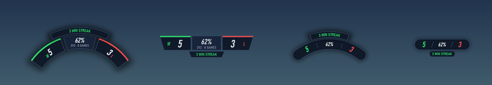
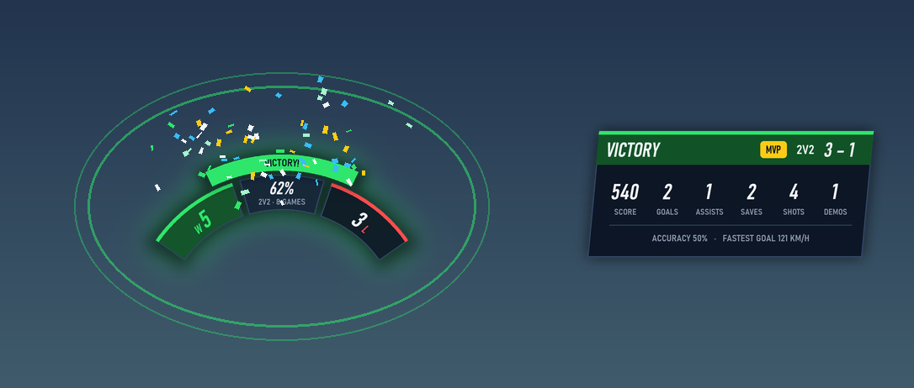
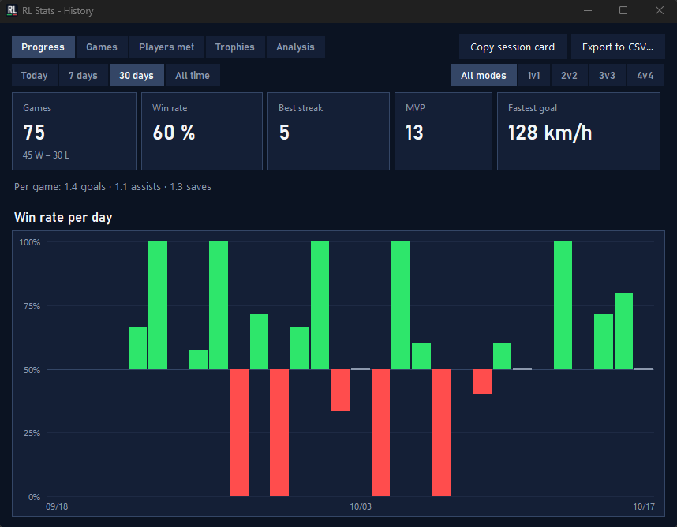
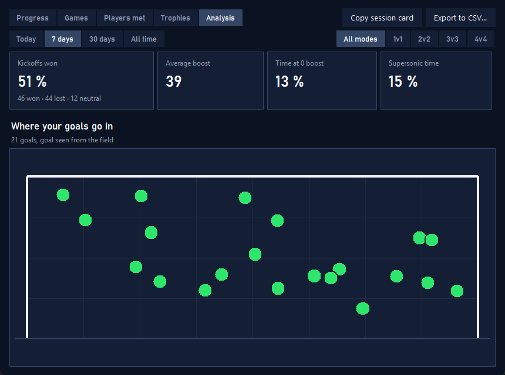

A free overlay that counts your wins and losses automatically, right next to your boost meter. Plus match summaries, history, teammates and progress charts. Un overlay gratuit qui compte tes victoires et défaites tout seul, juste à côté de ta jauge de boost. Avec résumé de match, historique, coéquipiers et graphiques de progression.

Launch it once, play as usual. Everything is recorded on its own. Tu le lances une fois et tu joues normalement. Tout s'enregistre tout seul.
Updated at the end of every online match, separately for 1v1, 2v2, 3v3 and 4v4. Leaving counts as a loss.
Mis à jour à la fin de chaque match en ligne, séparément pour le 1v1, 2v2, 3v3 et 4v4. Quitter compte comme une défaite.
Score, goals, assists, saves, shots, demos, accuracy, fastest goal and the MVP badge.
Score, buts, passes, arrêts, tirs, démolitions, précision, but le plus rapide et badge MVP.
Every game saved: daily win rate, best streak, MVPs, averages, CSV export.
Chaque partie est gardée : taux de victoire par jour, meilleure série, MVP, moyennes, export CSV.
Your win rate with each teammate compared to your average. Find your best duo.
Ton taux de victoire avec chaque coéquipier comparé à ta moyenne. Trouve ton meilleur duo.
Win rate by hour and by day of the week, with your best and worst 2-hour slots.
Taux de victoire par heure et par jour de la semaine, avec tes meilleurs et pires créneaux de 2 h.
During the game, see your record against players you already faced: 3 W 2 L
Pendant le match, ton bilan contre les joueurs déjà affrontés : 3 W 2 L
"10 wins tonight", with progress on the overlay. Optional tilt alert after 3 losses in a row.
« 10 victoires ce soir », avec la progression sur l'overlay. Alerte tilt en option après 3 défaites d'affilée.
Kickoffs won, average boost, time at 0 boost, supersonic time, and a map of where your goals go in.
Engagements gagnés, boost moyen, temps à 0 boost, temps supersonique et carte de tes buts.
OBS browser source, Discord status, and a session card you can paste in Discord in one click.
Source navigateur OBS, statut Discord, et une carte de session à coller sur Discord en un clic.
Also: 6 overlay styles, custom colors and size, win confetti, goal animations under the score, optional sounds, multi-monitor and ultrawide, auto-hide when the game is closed, English and French. Et aussi : 6 styles d'overlay, couleurs et taille personnalisables, confettis à la victoire, animation sous le score à chaque but, sons en option, multi-écrans et ultra-larges, masquage auto quand le jeu est fermé, français et anglais.
The overlay in game, and the history window. L'overlay en jeu, et la fenêtre d'historique.



RL Stats reads Rocket League's official Stats API, the local feed Psyonix added for overlays and tournament tools. RL Stats lit la Stats API officielle de Rocket League, le flux local ajouté par Psyonix pour les overlays et les outils de tournoi.
It doesn't read game memory, inject code or modify game files. The anti-cheat is never touched.
Il ne lit pas la mémoire du jeu, n'injecte rien et ne modifie pas les fichiers du jeu. L'anti-cheat n'est jamais touché.
Settings and history live on your PC. The only network request is the update check, which you can turn off.
Réglages et historique restent sur ton PC. Le seul accès réseau est la vérification des mises à jour, désactivable.
The full code is on GitHub under the MIT license. Read it, or build the exe yourself.
Tout le code est sur GitHub sous licence MIT. Tu peux le lire, ou construire l'exe toi-même.
Under a minute, nothing to install. Moins d'une minute, rien à installer.
Double-click RL Stats.exe. If Windows SmartScreen shows "Windows protected your PC", click More info → Run anyway.
Double-clique sur RL Stats.exe. Si Windows affiche « Windows a protégé votre ordinateur », clique sur Informations complémentaires → Exécuter quand même.
Or restart it if it was already open: the game only reads its config at startup. RL Stats enables the Stats API by itself.
Ou relance-le s'il était déjà ouvert : le jeu ne lit sa config qu'au démarrage. RL Stats active la Stats API tout seul.
No overlay can be drawn over exclusive fullscreen. RL Stats checks the game's settings and tells you if needed.
Aucun overlay ne peut s'afficher par-dessus le plein écran exclusif. RL Stats vérifie le réglage du jeu et te prévient.
No. RL Stats only uses the official Stats API that Psyonix provides for overlays. The only change it makes is setting PacketSendRate in your user config file TAStatsAPI.ini.
Non. RL Stats utilise uniquement la Stats API officielle que Psyonix fournit pour les overlays. La seule modification qu'il fait est de régler PacketSendRate dans ton fichier de config TAStatsAPI.ini.
The game doesn't send them through the Stats API. The players menu has links to each player's Tracker Network profile.
Le jeu ne les envoie pas dans la Stats API. Le menu des joueurs contient un lien vers le profil Tracker Network de chacun.
No, only online matches are counted.
Non, seuls les matchs en ligne sont comptés.
Set Appearance → RL interface scale to the same value as the game's Interface Scale, or pick the vertical style. You can also drag the overlay anywhere.
Règle Apparence → Échelle de l'interface RL sur la même valeur que l'échelle de l'interface du jeu, ou choisis le style vertical. Tu peux aussi déplacer l'overlay où tu veux.
Executables built with PyInstaller are sometimes flagged by mistake. Official releases are built by GitHub Actions from the public code, and you can build it yourself from source.
Les exécutables faits avec PyInstaller sont parfois signalés par erreur. Les versions officielles sont construites par GitHub Actions à partir du code public, et tu peux aussi le construire toi-même.
In %APPDATA%\RL Stats: settings, match history and log. Nothing is ever sent anywhere.
Dans %APPDATA%\RL Stats : réglages, historique des matchs et log. Rien n'est jamais envoyé ailleurs.
Free, forever. Feedback and ideas are welcome on GitHub. Gratuit, pour toujours. Retours et idées bienvenus sur GitHub.